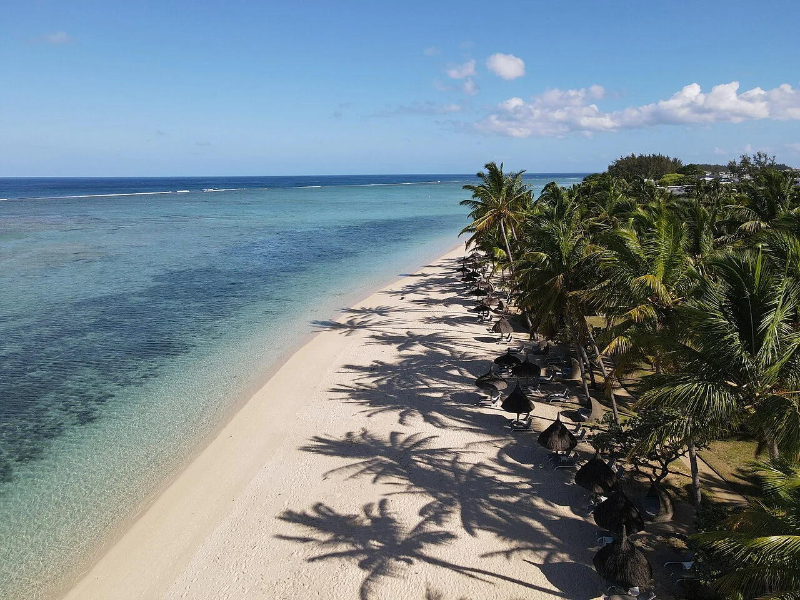

Flic en Flac — plage publique
Rivière Noire, Maurice · baignade, snorkeling, plongée

Plage publique de sable blanc sur la côte ouest de Maurice, avec un lagon protégé par les récifs de corail (Wikipédia). Snorkeling Report décrit un lagon d’environ 300 mètres de large, avec des massifs de corail à quelques dizaines de mètres du bord, des poissons-papillons, des idoles des Maures et parfois de petites murènes. Wikipédia ajoute que le site est réputé pour la plongée, avec ses grottes et ses épaves.
- Lieu
- Rivière Noire, Maurice
- Niveau
- Variable selon les conditions
- Activités
- baignade, snorkeling, plongée
- Type d'eau
- Mer / océan
- Coordonnées
- -20.28, 57.36 (position approximative du secteur)
Dangers à connaître
- Près de la barrière, l’eau devient peu profonde : tu peux te blesser et casser les coraux (Snorkeling Report).
- Des cyclones passent parfois entre janvier et mars. Ils perturbent la météo environ trois jours, avec de fortes pluies (Wikipédia).
- Plage publique fréquentée toute l’année par des familles du coin et des touristes (Wikipédia).
Le conseil d'Ocean Buddy
Pour le snorkeling, rejoins le côté nord de la plage publique et reste loin des zones les moins profondes près de la barrière : tu pourrais te blesser et abîmer le corail.
Ouvrir dans Ocean Buddy Télécharger sur l'App Store
Source : Fiche Ocean Buddy · décembre 2026 · d’après Wikipédia et Snorkeling Report · à vérifier localement.